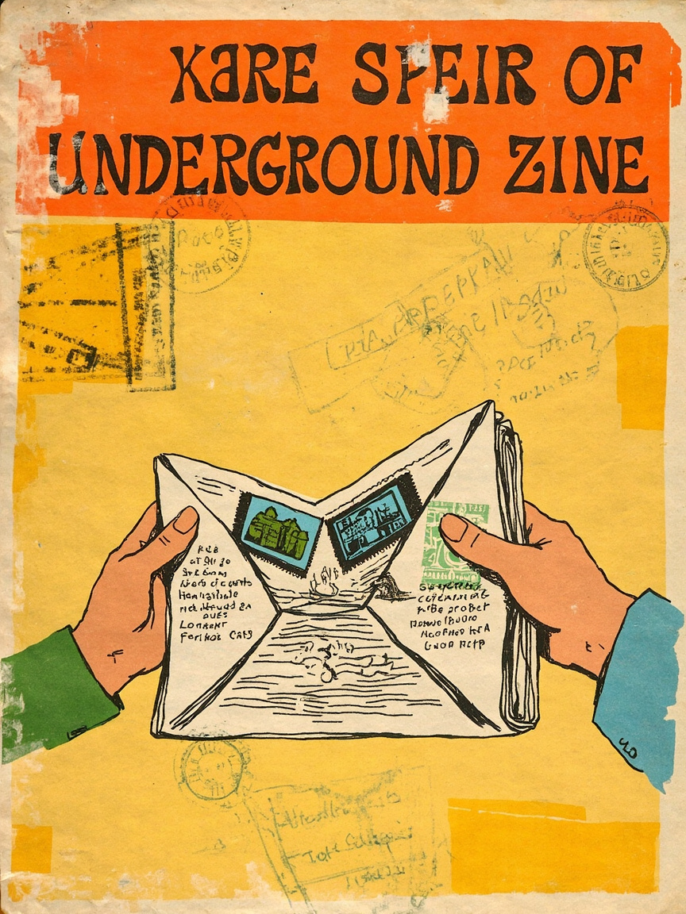

当报纸变成网络：Scenes from Other Scenes 和地下出版的另一种互联网
📰 一本 1969 年的"国际报纸"，和今天仍没人回答的连接问题
推荐标题
- 📰 当报纸变成网络：1969 年的一份"国际报纸"
- 📖 在没有推特的 1969 年，一个人办了一份"国际地下报纸"
- 🔥 一份 1969 年的"纸质互联网"，如何连接了全世界的反文化
- 💡 这本旧报纸让我重新思考 Newsletter 的意义
- 📬 从地下报纸到 Substack：连接场景的问题，五十年来没变过
正文
姐妹们，今天挖到一个很有意思的旧资料！
1969 年，一个英国人跑到纽约，做了一件很疯狂的事：他办了一份"国际报纸"。没有互联网，没有邮件列表，只有一台油印机和一个邮政地址。
他叫 John Wilcock，这份报纸叫《Scenes from Other Scenes》。它的副标题就是"国际报纸"——但它其实只有几页，内容都来自读者来信。
最厉害的是：它不是服务某个社区，而是服务所有社区之间的连接。纽约、伦敦、洛杉矶、东京的反文化场景，通过信件被连接在同一份纸上。
今天重看，发现这就是 Newsletter 的前身。Wilcock 做的事情，今天所有 Substack 创作者都在重复——只是平台变了，问题没变。
当每个群体都有自己的媒介，谁来连接不同的场景？当 AI 可以自动整理信息，连接关系本身会不会被简化？
这些问题，1969 年就已经开始了。
8 个标签
#媒介考古 #独立出版 #newsletter #社区 #文化史 #信息传播 #地下报纸 #技术哲学
本文基于 Far Out Company 对《Scenes from Other Scenes, 1969》的图像资料整理，并结合当代 Newsletter、社群媒介与 AI 信息分发进行分析。